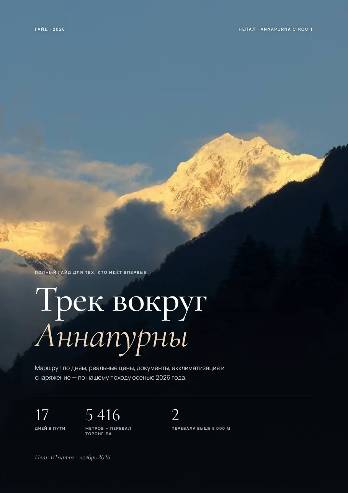
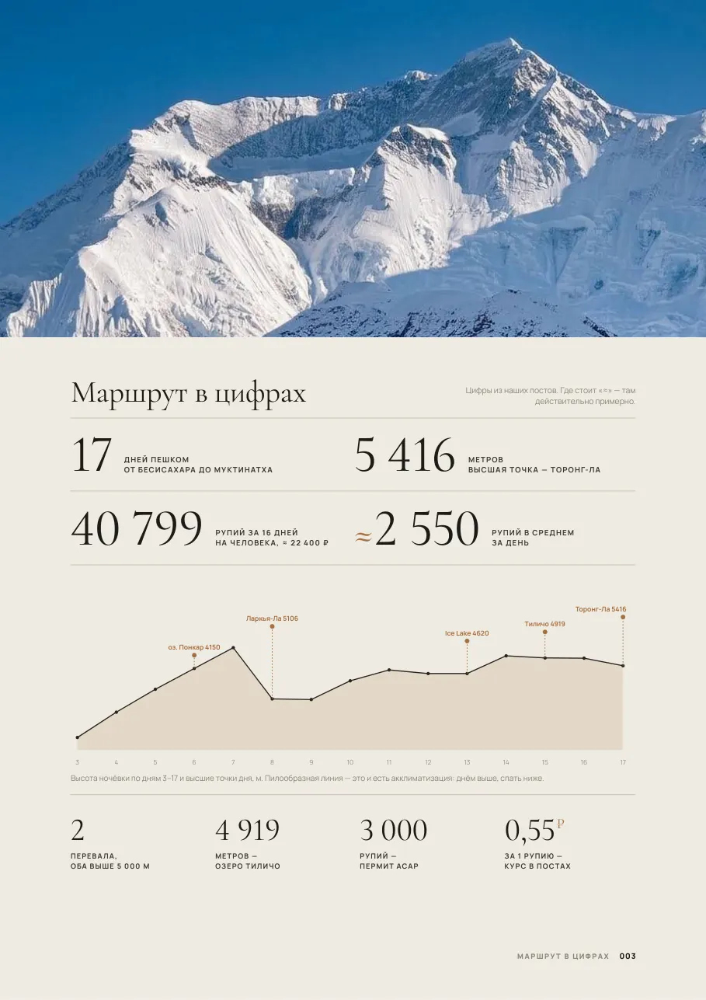
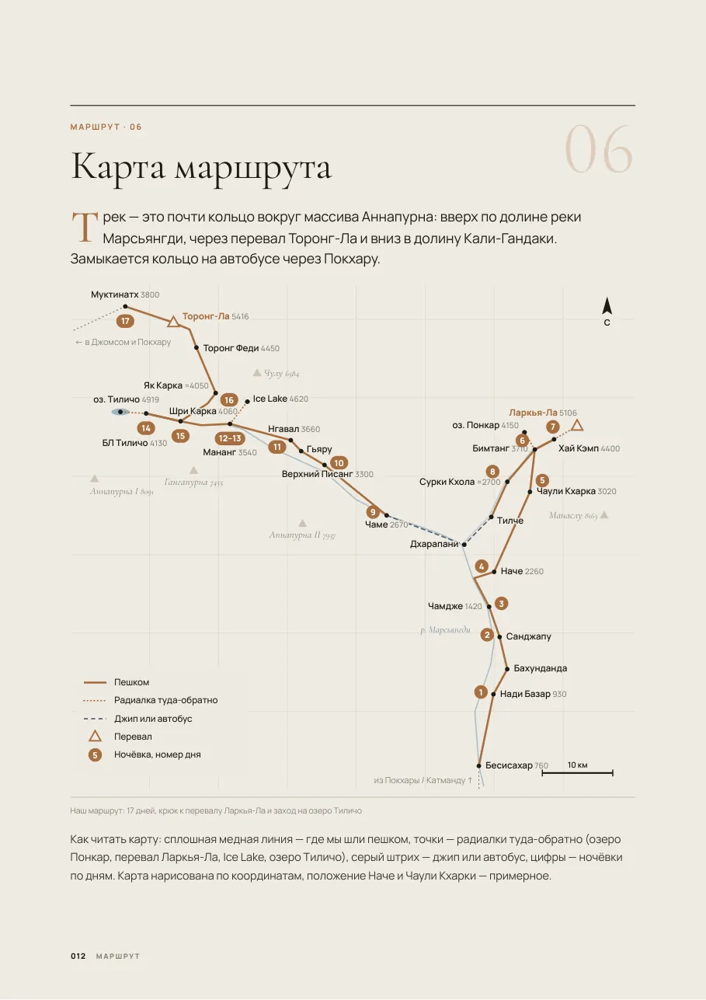
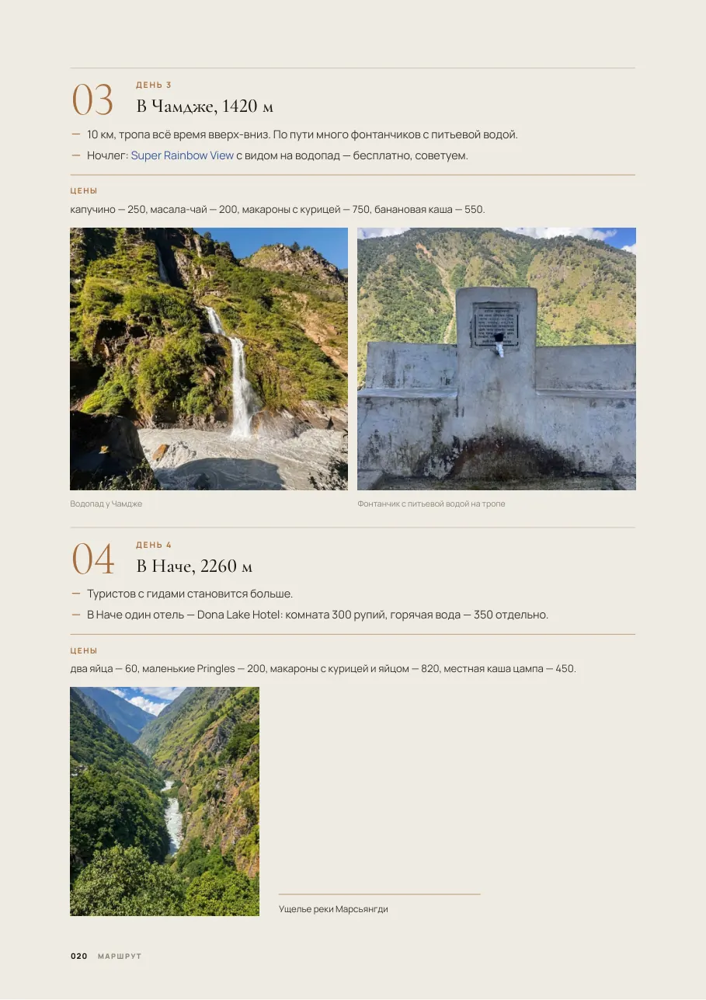
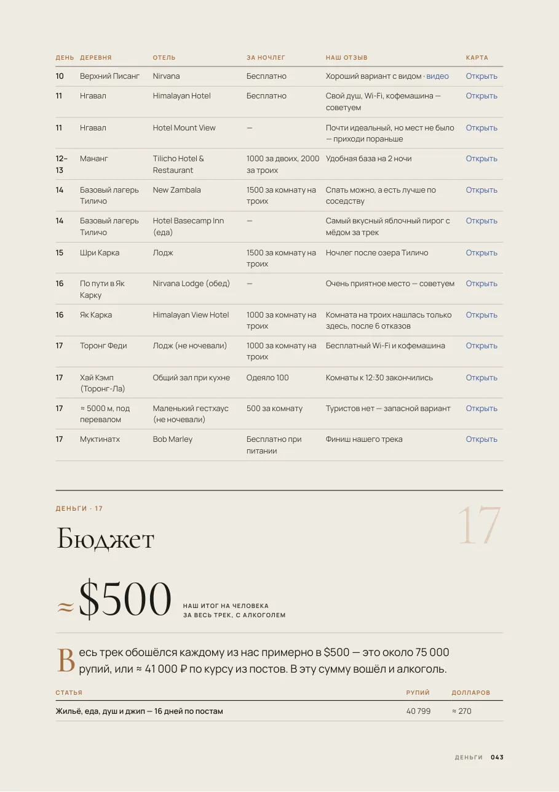

- Главная
- Гайд по Аннапурне

Трек вокруг Аннапурны
Гайд, по которому мы прошли сами: маршрут по дням, реальные цены, документы, акклиматизация и снаряжение. Собран по нашему походу осенью 2026 года.
- 58страниц
- 17дней пешком
- 5 416 мвысшая точка
- ≈$500на человека, все траты
17 дней по сетке
Наш реальный маршрут с крюком к Манаслу. Синие клетки — перевалы выше 5 000 м. Цены — сколько уходило на человека в день на еду и ночлег.
- День 1
Нади Базар
≈930 м
≈630 ₽ в день
- День 2
Санджапу
≈650 ₽ в день
- День 3
Чамдже
1 420 м
≈960 ₽ в день
- День 4
Наче
2 260 м
- День 5
Крюк к Манаслу
+1 600 м за день
≈1 220 ₽ в день
- День 6
Бимтанг
3 710 м
≈1 430 ₽ в день
- День 7
Хай Кэмп
4 400 м
≈1 240 ₽ в день
- День 8
Ларкья-Ла
5 106 м
- День 9
Тилче → Чаме
джип
- День 10
Верхний Писанг
3 300 м
≈850 ₽ в день
- День 11
Нгавал
- День 12
Мананг
3 540 м
≈2 580 ₽ в день
- День 13
Ice Lake
4 620 м
≈1 810 ₽ в день
- День 14
База Тиличо
4 130 м
- День 15
Озеро Тиличо
4 919 м
- День 16
Як Карка
- День 17
Торонг-Ла
5 416 м
Листайте вбок → все 17 дней
Так выглядит внутри
Журнальная вёрстка, карта с ключевыми точками и ссылками на Google Карты, таблицы цен.




Что внутри
26 разделов — от пермита до разговорника.
- Коротко о треке
- Когда идти
- Документы и разрешения
- Деньги, карты и связь
- Как добраться до старта
- Карта маршрута
- Готовые планы на 10, 14 и 17 дней
- Катманду и Покхара до и после трека
- Маршрут по дням — наш реальный опыт
- Крюк к Манаслу и перевал Ларкья-Ла
- Мананг и акклиматизация
- Перевал Торонг-Ла и спуск в Муктинатх
- Лучшие места для фото
- Горная болезнь — самое важное
- Карточка на экстренный случай
- Жильё и еда
- Бюджет
- Снаряжение — чек-лист
- Подготовка тела: план на 6 недель
- Здоровье, вода и страховка
- Самостоятельно или с гидом
- Безопасность и местные правила
- Разговорник: 20 фраз на непальском
- Полезные приложения
- Вопросы и ответы
- Частые ошибки и чек-лист перед выходом
Как получить
- Откройте бота
Кнопка ниже сразу открывает раздел «Путеводители».
- Подпишитесь на канал
Бот проверит подписку на @shmatov_ivan — без неё не пустит.
- Нажмите «Аннапурна»
PDF на 58 страниц придёт в чат. Сохраните его в офлайн до трека.